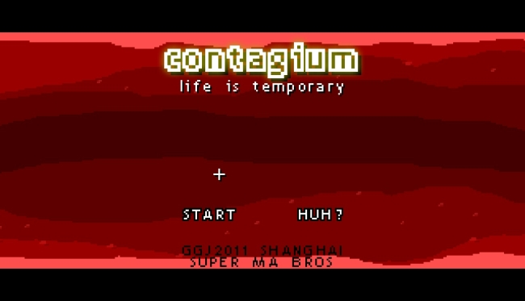
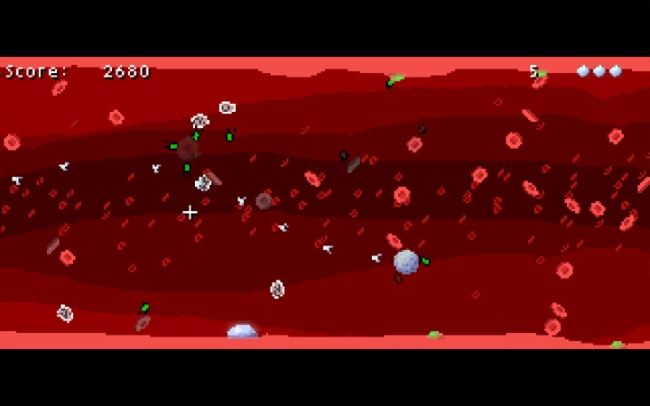
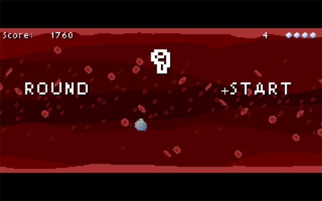

We managed to get something together for the 48 hour Global Game Jam in time, barely. It's posted on the GGJ site.

The theme was "extinction", and we tried to tie that into a simple arena shooter about the immune system.

We originally thought we only had about one day to work, as Justin was flying on Saturday and I on Sunday.

As it turned out, we managed to get almost all of Saturday to work on it, which let us get a good deal further than we thought we were going to be able to do.
On Sunday, during a stopover for my flight, I misjudged the amount of time it would take me to debug a bit more and upload to the GGJ site. As it turned out, Justin managed to get it online last minute after a frantic hour or two search for internet.
We weren't around to see the final presentations on Sunday but we had a great time hanging with everybody who participated, including Glen, Chris, Rachel, and all the guys at Coconut Island in Shanghai.